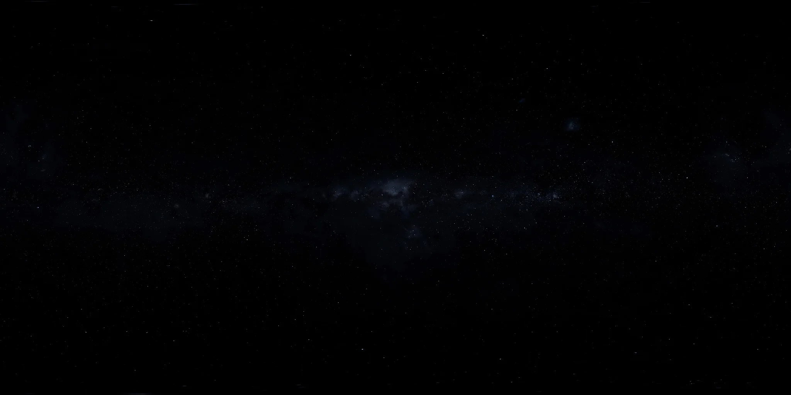

NOTES FROM A CURIOUS MIND
算法里的思路，推导中的线索，实验后的思考。在这里，把零散的好奇连成可以回看的轨迹。

不止记录代码：让模型、正确性与边界，共同解释一个解法。
一份能被重新读懂的笔记，应该保留条件、过程与疑问。
从一个明确任务出发，观察工具、反馈与验证如何构成闭环。
ABOUT THE JOURNAL
我是唐一潇，关注算法、数学、物理与人工智能。个人主页展示正在探索的方向与项目，这里则用文章把思路展开。
从问题的拆解，到实现与推导，再到复盘与记录；希望每一篇文字，都能留下下一次继续探索的起点。